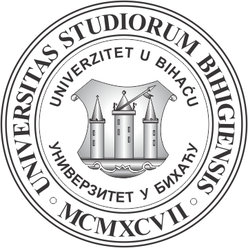

Tehnicki fakultet Univerziteta u Bihaću

Dobrodošli na Tehnički fakultet univerziteta u Bihaću
Odsjeci Tehničkog fakulteta
Tehnički fakultet Univerziteta u Bihaću nudi studije na 5 odsjeka.
U nastavku možete vidjeti svih 5 odsjeka i dostupne cikluse studija:
- Elektrotehnički odsjek - (Svi ciklusi studija)
- Mašinski odsjek - (Svi ciklusi studija)
- Drvnoindustrijski odsjek - (Svi ciklusi studija)
- Tekstilni odsjek - (Svi ciklusi studija)
- Građevinski odsjek - (Svi ciklusi studija)
I Kolokvij iz predmeta Internet programiranje,
akademska godina 2024/25